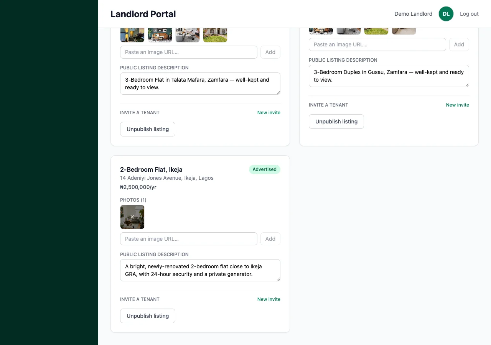
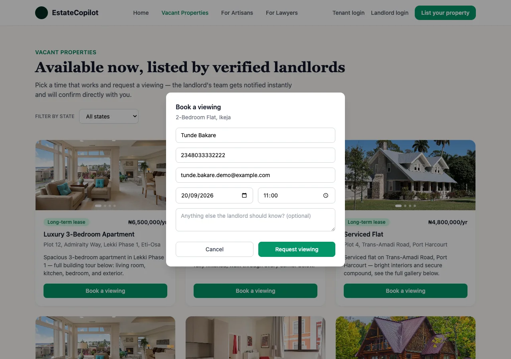

Vacancies
Got an empty unit? Here's who does what to get it seen — and rented.
Who
The landlordOnly the landlord (or their property manager) can list a vacancy. It's done from their own Properties page.
How
One toggleFlip Advertise on public site on for that property — no separate form.
What happens next
It goes publicThe unit appears on EstateCopilot's public listings page, and anyone can request a viewing.
Adds the property with photos & a description
Turns on "Advertise on public site"
Unit appears on the state's listings page
Picks a date & time, books a viewing
Confirms or cancels it in Bookings
1a. Listing a vacant unit — step by step
-
Open the property you want to advertise
In the landlord portal, go to Properties and find the unit that's empty. If it's not added yet, add it first (title, address, LGA, rent, deposit) — see the Landlord Guide's Adding & managing your properties section.
-
Add good photos and a clear description
This is what visitors judge the unit by before they even book a viewing — clear, honest photos and a short description of what makes it a good place to live.

A photo and an honest description — this is what appears publicly. -
Turn on "Advertise on public site"
Find the toggle on the property's card and switch it on. That's it — the unit is now live.

Now showing "Advertised" — live on the public site. TipFound a tenant? Flip the same toggle back off to pull the listing down immediately. -
See it from the visitor's side
Anyone can browse estatecopilot.org/properties, filter by state, and open your listing. They pick a date and time and fill in their name, phone and email to request a viewing — no account needed on their end.

The public "Book a viewing" form — no account needed to submit it.
1b. Managing viewing requests
-
You're notified straight away
The moment someone books a viewing, you get a WhatsApp message and an email — you don't need to be watching the dashboard for it to reach you.
-
Open Bookings
Every request lands in Bookings, grouped by date like a calendar.

The request lands here the moment it's submitted — visitor details included. -
Confirm or cancel
Tap Confirm if the time works, or Cancel if it doesn't — then follow up with the visitor directly using the phone number shown.